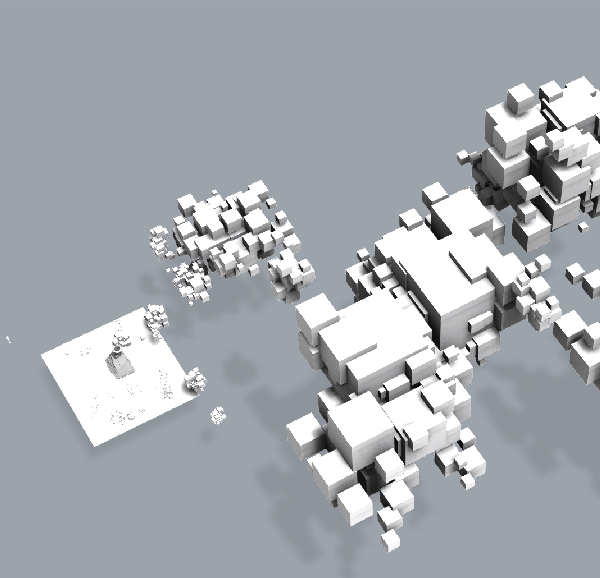
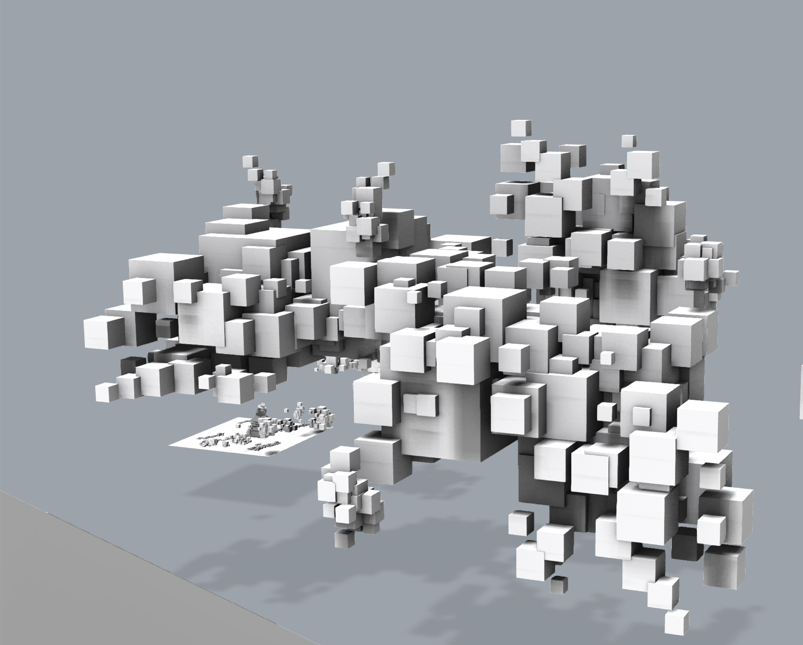

OVERVIEW
About Work
本作品為結合 3D 列印與 LED 燈光技術的戒指展示架。製程從初期概念草圖出發， 逐步收斂至幾何塊面；並將早期較為繁複的構圖，精簡為單面的塊面排列，藉此優化 3D 列印的成形效率與 LED 電路的硬體配置。
戒指造型以塊面呼應整體設計。 在場景呈現上，揚棄後製合成，選擇直接於 Rhino 中建構完整空間：運用重複的幾何元素向背景延伸， 並透過精準的鏡頭視角與景深調校，打造出具備強烈空間縱深的實景渲染。

MODELING — VIEW 01

MODELING — VIEW 02

MODELING — VIEW 03